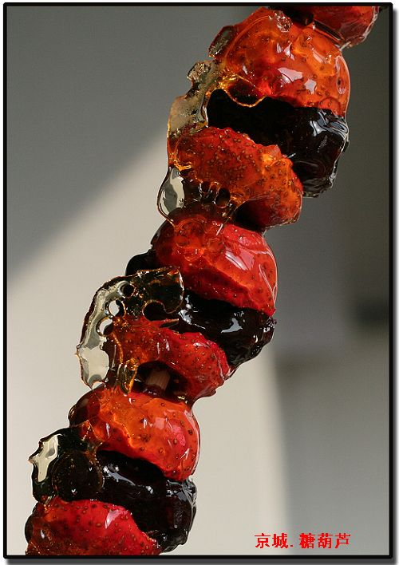

我爱美食 @ Dec 14, 2008
昨晚上在湖南路京城糖葫芦店带回6串不同品种的糖葫芦，放在茶几上一夜过来，上面的糖稀居然化了，好在外面有纸袋包装，赶紧放在冷藏柜里。京城糖葫芦店的糖葫芦很新鲜，都是现做出来卖的，这串是小黑枣糖葫芦，口味很不错的说：）

这周所有烧的菜中最难忘的是山药、黄豆炖猪手，猪手吃完了，利用现成的荤汤放进娃娃菜和油面筋，又是一锅美味。

昨晚上在湖南路京城糖葫芦店带回6串不同品种的糖葫芦，放在茶几上一夜过来，上面的糖稀居然化了，好在外面有纸袋包装，赶紧放在冷藏柜里。京城糖葫芦店的糖葫芦很新鲜，都是现做出来卖的，这串是小黑枣糖葫芦，口味很不错的说：）

这周所有烧的菜中最难忘的是山药、黄豆炖猪手，猪手吃完了，利用现成的荤汤放进娃娃菜和油面筋，又是一锅美味。
8 Responses to “我爱美食”
2008-12-14
看着下面的黄豆炖猪手好油
不知道是不是到了油而不腻的境界
糖葫芦很诱人
2008-12-14
不错，这张照片效果真是太好了，让人垂涎。
2008-12-14
猪手汤一点也不油腻，非常好吃。
2008-12-15
糖葫芦照的不错，诱人
猪脚爪上不知道有没有毛，那一刀剖的是地方
2008-12-15
山楂看起来真漂亮！
2008-12-15
两幅照片都很诱人。尤其是第二张炖猪手，仿佛都闻到香味儿了。。。
2008-12-18
哈哈,今天我也去湖南路京城糖葫芦店买了一串解解馋
2008-12-19
糖葫芦拍得非常好，糖汁都要流下来了，让人很有食欲的说：）
Leave A Reply
存档只读，评论已关闭。